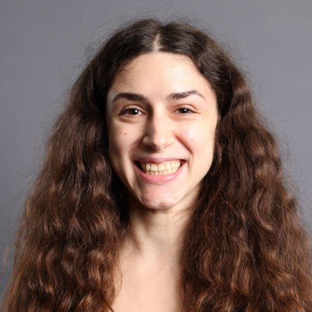

About
I am a Postdoctoral Researcher at Inria @ Université Côte d’Azur in the MARIANNE team, working across AI, NLP, Argumentation, and Logic. My current research focuses on developing methods for reconstructing implicit reasoning towards making AI systems more transparent and trustworthy.
I completed my PhD in Artificial Intelligence at King’s College London, within the UKRI Centre for Doctoral Training in Safe and Trusted AI, a collaboration between King’s College London and Imperial College London. I was supervised by Dr. Oana Cocarascu and Dr. Sanjay Modgil. My thesis, titled Argument Schemes and Critical Questions for Supporting Ethical Deliberation, focused on supporting rational joint human-AI reasoning as a pathway to AI value alignment, via the use of argument schemes and critical questions.
During my PhD I was also a visiting researcher at the Alan Turing Institute, as part of its Enrichment Scheme, and completed the Associateship of King’s College (AKC).
Background
Before my PhD, I completed an MSc in Artificial Intelligence at Utrecht University, graduating cum laude. My master’s thesis, Empirical Evaluation of Formal Models of Argumentation, was supervised by Prof. Henry Prakken.
I also hold an Integrated Master’s in Applied Mathematical and Physical Sciences from the National Technical University of Athens. My thesis in the philosophy of mathematics, From Scientific to Mathematical Realism: Indispensability Arguments, was supervised by Prof. Aristidis Arageorgis.
Research interests
Recent highlights
- 2026Joined Université Côte d’Azur & Inria as a Postdoctoral Researcher.
- 2026Towards Cross-Lingual Argument Scheme Classification accepted at SETN 2026.
- 2026Invited tutorial at SUM 2026 and summer school session at COMMA 2026.
- 2025Completed my PhD in Artificial Intelligence at King’s College London.
- 2025Can Large Language Models Understand Argument Schemes? published in Findings of ACL 2025.
Beyond research
I studied guitar for ten years and hold a Higher Theoretical Music Studies diploma, trained in film production and direction, and speak Greek, English, French and Spanish, plus some Dutch, Portuguese and Greek Sign Language.